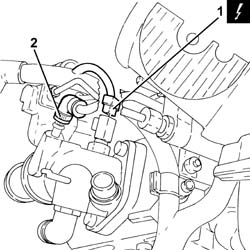
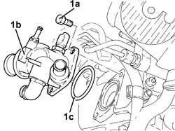
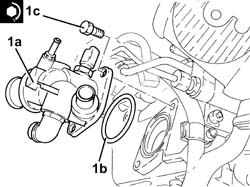
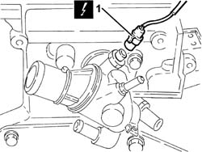

1088C42 THERMOSTAT - R + R WITH CYLINDER HEAD REMOVED
- Path
- Procedures > 10 ENGINE UNIT > 1088 ENGINE COOLING > 1088C WATER PUMP AND THERMOSTAT > 1088C42 THERMOSTAT - R + R WITH CYLINDER HEAD REMOVED
- Kind
- repair procedure (removal / refitting; the operation number is the code)
- Applies to
- engines: 1.8 T.SPARK, 2.0 JTS; all production periods
- Interactive page
- https://sloeber94.github.io/elrnDB-aGt/en/#/125001182
Applies to: engines: 2.0 JTS; all production periods
 Removing
Removing
 Refitting
RefittingPosition the cylinder head on a special workbench.
1. Disconnect the electrical connection from the engine coolant temperature sensor.
Description | Connector | |
|---|---|---|
1 | Engine temperature sending unit | See K36 ENGINE TEMPERATURE SENDER UNIT ( CONNECTORS ) |
2. Loosen the collar and disconnect the coolant return pipe to the reservoir, then remove.

Applies to: engines: 2.0 JTS; all production periods
1. Undo the bolts (1a) and remove the thermostat (1b) complete with O-ring (1c).

Applies to: engines: 2.0 JTS; all production periods
Refitting
Removing1. Place the thermostat (1a) in its housing with the o-ring (1b) and secure it by tightening the bolts (1b) to the recommended torque.
Fastening | Component | Ø | Value (daNm) | |
|---|---|---|---|---|
1c | Bolt | THERMOSTAT | M8 | (Cylinder head side) 2.3 - 2.8 |

Applies to: engines: 2.0 JTS; all production periods
Connect the coolant return pipe to the coolant reservoir, thermostat side, and tighten the collar.
Connect the electrical connection to the engine coolant temperature sensor.
Applies to: engines: 1.8 T.SPARK; all production periods
1. Disconnect the electrical connection from the engine coolant temperature sensor.
Description | Connector | |
|---|---|---|
1 | Engine temperature sending unit | K36 |

Applies to: engines: 1.8 T.SPARK; all production periods
1. Undo the bolts (1a) and remove the thermostat assembly (1b).
2. Remove the seal.

Applies to: engines: 1.8 T.SPARK; all production periods
Refitting
RemovingFit the thermostat, complete pipe and gasket, and secure it tightening the bolts to the recommended torque.
Fastening | Component | Ø | Value (daNm) | |
|---|---|---|---|---|
- | - | - | - | - |
Connect the electrical connection to the engine coolant temperature sensor.